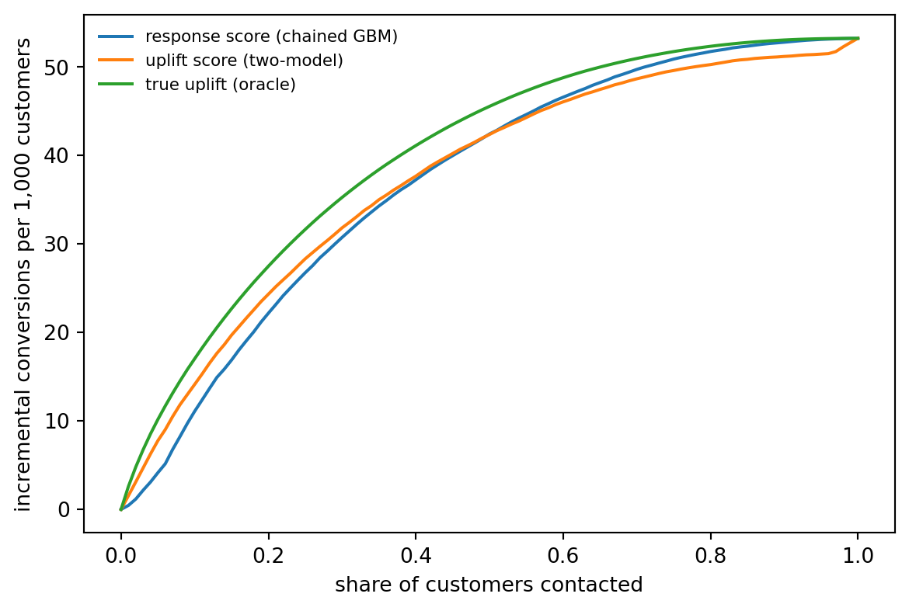
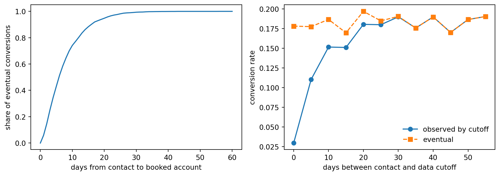

Selection filters, calibrated funnels, lift, uplift, and the time it takes to convert
A bank, or a marketplace that refers customers to banks, wants to know who will sign up for a credit card if it sends them an offer. The question sounds like ordinary binary classification. It is not, because the outcome you observe has passed through a series of filters, and each filter was applied by somebody’s earlier decision. The bank texted only people its previous model liked. Of those, only some responded. Of those, only the ones who cleared the bank’s credit policy were approved. A “final sign-up” is the product of all three gates, and everyone who did not pass the first one has no outcome at all.
This chapter builds a conversion model that respects that structure. We model the funnel stage by stage, correct for the earlier targeting policy with inverse propensity weights and a randomized holdout, calibrate the probabilities so that they can be multiplied by revenue, and evaluate with the lift and gain charts that marketing teams actually use. We then separate two questions that are easy to confuse: who will convert if contacted (response modeling) and who will convert because they were contacted (uplift modeling). We finish with the timing of conversion, which matters because a model trained on last week’s campaign sees only the fast converters.
235.1 The Funnel as a Sequence of Filters
Let \(X\) be the customer’s features and define three binary stages:
\(T\): the customer was contacted (texted, emailed, shown an offer),
\(R\): the customer responded (clicked and started an application),
\(A\): the bank accepted the application.
A conversion is \(Y = T \cdot R \cdot A\) in the contacted world. By the chain rule of probability, the quantity we want for targeting, the probability of conversion if contacted, factors as
\[
P(Y = 1 \mid X, T = 1) = \underbrace{P(R = 1 \mid X, T = 1)}_{\text{response}} \times \underbrace{P(A = 1 \mid X, R = 1, T = 1)}_{\text{acceptance}} .
\tag{235.1}\]
Each factor is estimated on the subset where it is observed: response on contacted customers, acceptance on responders. Modeling the stages separately has three advantages over a single model of \(Y\). The acceptance stage is the partner bank’s credit policy, which changes on its own schedule, and a separate model can be refreshed without touching the response model. Each stage has more positive examples than the end-to-end outcome. And the stages have different drivers (engagement drives response, creditworthiness drives acceptance), which a single model has to untangle from fewer events.
235.1.1 The targeting filter and the random holdout
The first filter is the most dangerous. If last quarter’s campaign texted mostly highly engaged customers, the training set for the response model is dominated by them. A model fitted to that sample is conditionally unbiased if two things hold: contact depended only on features the model sees (selection on observables, in the sense of Rosenbaum and Rubin, 1983), and the model is correctly specified. In practice the second condition never holds exactly, so a misspecified model fitted on a skewed sample approximates the truth well where the old campaign looked and badly where it did not. And any evaluation computed on the contacted sample (AUC, calibration, expected conversions) describes the old campaign’s population, not the population you will target next.
Two tools fix this. Inverse propensity weighting (IPW) reweights each contacted customer by the inverse of their probability of having been contacted, \(w_i = 1 / \pi(x_i)\) with \(\pi(x) = P(T = 1 \mid X = x)\), so that the weighted contacted sample resembles the whole population (Horvitz and Thompson, 1952). Weighted estimates are unbiased when \(\pi\) is known or well estimated and bounded away from zero. A randomized holdout is the stronger tool. If a small share of the population is contacted at random regardless of the old model, then within that group \(\pi\) is a known constant, the contacted customers are a random sample of the population, and every evaluation metric computed on them is unbiased. The random group also guarantees positivity: every type of customer has some chance of being contacted, so the weights in IPW stay finite.
If contact depends on something the model does not see (a branch manager’s judgment, a field missing from the warehouse), neither IPW nor more data fixes the bias, and one needs a selection model in the tradition of Heckman (1979) or, much better, more randomization. The same logic applies to the acceptance stage. The bank’s decision is only observed for applicants, which is the reject inference problem of credit scoring. Crook and Banasik (2004) show that the usual statistical fixes help less than one hopes, which is why a partner that shares its decision rules, or accepts a small random sample of marginal applicants, is worth a great deal.
235.2 A Simulated Card Campaign
We simulate a population of 60,000 existing customers with five features: a standardized credit score, log income, a digital engagement index, credit utilization, and tenure. Twenty percent of customers are in a random group, contacted with probability one half. The remaining eighty percent were contacted by the old targeting model, which favored engaged, creditworthy customers. Customers can also apply on their own without being contacted, so the contact has a causal effect that differs from the response probability. Contacted customers who respond go through the bank’s acceptance model, and conversions arrive with a delay after the contact.
Code
import numpy as npimport pandas as pdimport matplotlib.pyplot as pltrng = np.random.default_rng(1207)N =60_000sig =lambda u: 1/ (1+ np.exp(-u))df = pd.DataFrame({"score": rng.normal(0, 1, N), # standardized credit score"income": rng.normal(0, 1, N), # standardized log income"engagement": rng.normal(0, 1, N), # app logins, email opens"utilization": rng.beta(2, 3, N), # revolving utilization"tenure": rng.exponential(4, N), # years with the bank})X = df.to_numpy()def p_respond(d): # response if contacted: engagement, credit need, new customersreturn sig(-2.0+0.4* d.engagement +2.5* (d.utilization -0.4)-1.2* (d.utilization -0.4) **2*10+0.8* (d.tenure <1) +0.2* d.income)def p_organic(d): # applying without any contactreturn sig(-3.8+2.0* d.engagement +0.5* d.score)def p_accept(d): # the bank's credit policy, which we do not controlreturn sig(0.3+2.2* d.score +0.7* d.income -2.0* (d.utilization -0.4))df["random_group"] = rng.random(N) <0.20old_policy = sig(-1.5+2.0* df.engagement +1.5* df.score)df["pi"] = np.where(df.random_group, 0.5, old_policy) # true contact propensitydf["T"] = rng.random(N) < df.piapplied_if_T = rng.random(N) <1- (1- p_respond(df)) * (1- p_organic(df))applied_if_C = rng.random(N) < p_organic(df)df["R"] = np.where(df["T"], applied_if_T, applied_if_C)df["A"] = df.R & (rng.random(N) < p_accept(df))df["Y"] = df.A.astype(int)df["delay"] = np.where(df.Y ==1, rng.gamma(1.5, 5.0, N), np.nan) # days to booked account# ground truth for later checks: conversion if contacted, and if notdf["p_true_T"] = (1- (1- p_respond(df)) * (1- p_organic(df))) * p_accept(df)df["p_true_C"] = p_organic(df) * p_accept(df)funnel = df.groupby(["random_group", "T"]).agg(customers=("Y", "size"), applied=("R", "mean"), accepted_if_applied=("A", lambda a: a[df.loc[a.index, "R"]].mean()), converted=("Y", "mean"))funnel.round(3)
customers
applied
accepted_if_applied
converted
random_group
T
False
False
33114
0.032
0.462
0.015
True
14908
0.302
0.708
0.214
True
False
5989
0.079
0.658
0.052
True
5989
0.184
0.579
0.106
The table shows the problem in miniature. Among customers targeted by the old model, the contacted group converts at a much higher rate than in the random group, not because texting works better on them but because the old model selected people who were likely to apply anyway. Comparing contacted and non-contacted customers outside the random group would wildly overstate the effect of the campaign.
235.3 Stage Models, Weighting, and Calibration
We hold out half of the random group as an evaluation set. Because it was contacted at random, its contacted members are a representative sample of the population under the policy “contact everyone”, which is exactly the counterfactual the targeting model must predict. Everything else is training data. We compare four ways of estimating \(P(Y = 1 \mid X, T = 1)\):
Direct, unweighted. A logistic regression of \(Y\) on \(X\) fitted to all contacted training customers.
Direct, IPW. The same model weighted by \(1 / \hat\pi(x)\), where \(\hat\pi\) is a logistic regression of \(T\) on \(X\) (we pretend not to know the true propensities).
Chained, gradient-boosted. Separate histogram gradient-boosted classifiers for response (on contacted customers, IPW weighted) and acceptance (on applicants), multiplied as in Equation 235.1.
Chained and recalibrated. The chained score passed through Platt scaling, a two-parameter logistic regression on the score’s log-odds, fitted on the random-group customers in the training data. With more calibration data, isotonic regression (Zadrozny and Elkan, 2002) is the more flexible alternative.
Because the data are simulated, the last two columns compare each model with the true probabilities rather than with noisy outcomes. The first of them, total predicted conversions over total expected conversions, is what a campaign forecast depends on. The second measures how far the individual probabilities are from the truth. Three lessons come out of the table.
Weighting fixes the aggregate, not the shape. The unweighted logistic regression was fitted to a population skewed toward engaged, creditworthy customers, and applied to everyone its total forecast is off. Weighting by the inverse contact propensity pulls the total toward the truth. It does not make the individual probabilities more accurate, because a misspecified linear model stays misspecified however its errors are weighted.
Flexibility and structure help the individual probabilities most. The chained gradient-boosted model captures the nonlinear response to utilization, the new-customer effect, and the bank’s credit cutoff, which shows up as the highest AUC, the lowest log loss, and the smallest distance to the true probabilities.
Recalibration is a check, not a guaranteed improvement. Platt scaling on the random group moves the chained model’s total forecast, but a calibration sample of a few thousand customers is itself noisy, so it can nudge an already reasonable model in the wrong direction. Its most valuable output is the diagnosis: if the fitted Platt slope is near one and the intercept near zero, the model was already calibrated for the target population.
The figure below shows the same comparison as reliability curves on observed outcomes.
Figure 235.1: Reliability diagram on the randomized evaluation sample. Each point is a decile of predicted probability, plotted against the observed conversion rate in that decile. A calibrated model lies on the diagonal. The unweighted direct model over-predicts for the customers the old campaign rarely contacted.
Calibration matters because conversion probabilities are inputs to other calculations. An expected-value targeting rule (\(p \times\) revenue \(>\) cost), a lead allocation optimizer such as the one in Chapter 234, and the monthly forecast for the partner bank all multiply the probability by something. Niculescu-Mizil and Caruana (2005) show that boosted trees in particular produce distorted probabilities and benefit from Platt scaling or isotonic regression, and Guo et al. (2017) document the same for modern neural networks. Recalibrate on data drawn from the population you will score, which here means the random group.
How much does the evaluation population matter? We can answer without a new experiment by reweighting the randomized evaluation sample to look like the customers the old campaign contacted (weights proportional to the old policy’s contact probability) and recomputing the metrics for the same chained model.
The same model looks different on the two populations. The old campaign’s audience converts at a much higher rate and is more homogeneous, so the AUC computed there understates how well the model separates customers in the broader population it will actually be used on. A team that evaluates only on the previously contacted customers will misjudge both the size of the opportunity and the quality of the model.
235.4 Lift, Gain, and the Decile Table
Campaigns are run on a budget: text the top 10 or 20 percent. The natural evaluation is therefore how many conversions the model concentrates at the top of the ranking. Sort customers by score and divide them into deciles. The cumulative gain at depth \(q\) is the share of all conversions captured by contacting the top fraction \(q\), and the lift is the conversion rate in the top fraction relative to the overall rate,
Ling and Li (1998) made the lift chart the standard tool for direct marketing models, noting that classification accuracy is meaningless when responders are a few percent of the population. Lift and gain are ranking metrics, so they are unaffected by calibration, and the reason to compute them on the randomized sample is the same as before: on the old campaign’s population, every model’s lift is compressed because the obvious prospects were already selected.
(a) Cumulative gain on the randomized evaluation sample. The diagonal is random targeting and the upper curve is a perfect ranking. At a given contact budget, the vertical gap between a model and the diagonal is the extra share of conversions it captures.
customers
predicted_rate
observed_rate
cumulative_gain
cumulative_lift
decile
1
300
0.489
0.403
0.394
3.935
2
299
0.223
0.184
0.573
2.866
3
300
0.136
0.143
0.713
2.377
4
299
0.090
0.124
0.834
2.085
5
300
0.059
0.053
0.886
1.771
6
299
0.039
0.040
0.925
1.542
7
299
0.024
0.037
0.961
1.373
8
300
0.012
0.020
0.980
1.226
9
299
0.004
0.017
0.997
1.108
10
300
0.001
0.003
1.000
1.000
(b)
Figure 235.2
The decile table is the artifact most often shown to the business. It answers the questions that matter for a campaign plan: how many conversions to expect if we text the top two deciles, how fast the conversion rate decays, and where the marginal decile stops paying for the cost of contact. Because the predicted rate column comes from a calibrated model, it can be compared directly with the observed rate, and a gap between the two is the first sign that the model needs a refresh.
235.5 Response Is Not Uplift
Everything so far estimates \(P(Y = 1 \mid X, T = 1)\), the probability of converting if contacted. That is the right quantity for a referral marketplace paid per conversion that cannot reach customers any other way. It is the wrong quantity for a bank deciding whom to text among its own customers, who can apply through the app at any time. The bank cares about incremental conversions,
\[
\tau(x) = P(Y = 1 \mid X = x, T = 1) - P(Y = 1 \mid X = x, T = 0),
\tag{235.3}\]
the conditional average treatment effect of contact. Customers fall into four informal groups (Gutierrez and Gérardy, 2017): persuadables who convert only if contacted, sure things who convert either way, lost causes who never convert, and do-not-disturbs whom contact actually puts off (for example, by prompting them to close a dormant account). A response model ranks sure things at the top, because they convert at the highest rate, and spends the budget on customers who would have converted anyway. Ascarza (2018) documents the same failure in customer retention, where targeting the customers at highest risk of churning turned out to be far less effective than targeting those most responsive to the intervention.
Estimating \(\tau(x)\) requires outcomes for both contacted and non-contacted customers who are otherwise comparable, which is exactly what the random group provides. Because contact in our data depended only on observed features, the non-random customers can be used too, as long as the random group guarantees that every kind of customer appears in both arms. The simplest estimator, the two-model or T-learner, fits separate outcome models in the two arms and takes the difference. Künzel et al. (2019) analyze it alongside the X-learner and other meta-learners, and Rzepakowski and Jaroszewicz (2012) develop decision trees that split directly on uplift. A full treatment of uplift modeling, with honest evaluation, Qini curves, and policy learning, is in the uplift chapter of Mike Nguyen’s A Guide on Data Analysis (Nguyen, 2020), with R code. Here we show the main point: on the same budget, ranking by uplift and ranking by response target very different customers.
Code
m1 = HistGradientBoostingClassifier(**hgb).fit(train[tT][FEATS], train[tT].Y)m0 = HistGradientBoostingClassifier(**hgb).fit(train[~tT][FEATS], train[~tT].Y)pop = df[is_eval] # evaluation half of the random grouptau_hat = m1.predict_proba(pop[FEATS])[:, 1] - m0.predict_proba(pop[FEATS])[:, 1]tau_true = (pop.p_true_T - pop.p_true_C).to_numpy()rankers = {"response score (chained GBM)": models["chained GBM + Platt"](pop),"uplift score (two-model)": tau_hat, "true uplift (oracle)": tau_true}share = np.linspace(0, 1, 101)fig, ax = plt.subplots(figsize=(6.2, 4.2))for name, s in rankers.items(): cum = np.r_[0, np.cumsum(tau_true[np.argsort(-s)])] ax.plot(share, 1000* cum[(share *len(s)).astype(int)] /len(s), label=name)ax.set_xlabel("share of customers contacted"); ax.set_ylabel("incremental conversions per 1,000 customers")ax.legend(frameon=False, fontsize=8)plt.tight_layout()plt.show()pd.DataFrame({name: {"mean true uplift in top 20%": tau_true[np.argsort(-s)[: len(s) //5]].mean(),"mean conversion if contacted, top 20%": pop.p_true_T.to_numpy()[np.argsort(-s)[: len(s) //5]].mean()}for name, s in rankers.items()}).T.round(4)

(a) Incremental conversions per 1,000 customers in the population, when contacting the top share of customers ranked by each score. Because the data are simulated, incremental conversions are computed from the true treatment effect. Ranking by the response model fills the budget with customers who would have converted anyway. Ranking by a two-model uplift estimate captures more incremental conversions at small and moderate budgets. The curves meet once the budget reaches most persuadable customers.
mean true uplift in top 20%
mean conversion if contacted, top 20%
response score (chained GBM)
0.1110
0.3117
uplift score (two-model)
0.1217
0.2485
true uplift (oracle)
0.1375
0.2298
(b)
Figure 235.3
The table makes the contrast concrete. The response ranking picks customers with the highest conversion rate if contacted, but much of that rate is organic. The uplift ranking picks customers whose conversion rate is lower but who need the nudge. The advantage is largest at small budgets, where the response ranking spends its first contacts on highly engaged customers who were going to apply anyway, and it fades once the budget is large enough to reach most persuadables under either ranking. In a real campaign the oracle curve is not available, and the uplift ranking is evaluated with a Qini or uplift curve computed on a randomized holdout, as described in the references above. The uplift model also needs much more data than a response model to reach the same precision, because it estimates a small difference between two noisy probabilities. That is the price of answering the right question.
235.6 Time to Conversion
Conversion is not instantaneous. A customer texted today may apply next week, and the bank may take several days to decide and book the account. If the training data for a model include last week’s campaign with the label “converted by today”, recent contacts are under-labeled, and the model learns that whatever distinguished last week’s audience predicts non-conversion. Chapelle (2014) formalized this delayed feedback problem for display advertising conversions and proposed modeling the conversion probability and the delay distribution jointly.
The simplest correct treatment is a survival view. For a contact made \(e\) days before the data cutoff, a conversion is observed only if the delay \(D\) is at most \(e\). If \(G(d) = P(D \le d \mid Y = 1)\) is the delay distribution among converters, the observed label satisfies
so one can either wait for a maturity window long enough that \(G(e) \approx 1\), or weight recent observations and divide out \(G(e)\) as Chapelle’s model does, or use a discrete-time hazard model of the kind developed in Chapter 232 for default timing.
Code
conv_delay = df.delay.dropna().to_numpy()fig, ax = plt.subplots(1, 2, figsize=(10, 3.6))d_grid = np.arange(0, 61)G = np.array([(conv_delay <= d).mean() for d in d_grid])ax[0].plot(d_grid, G)ax[0].set_xlabel("days from contact to booked account"); ax[0].set_ylabel("share of eventual conversions")contacted = df[df["T"]].copy()contacted["days_before_cutoff"] = rng.integers(0, 60, len(contacted))observed = (contacted.Y ==1) & (contacted.delay <= contacted.days_before_cutoff)by = contacted.assign(obs=observed).groupby(contacted.days_before_cutoff //5*5)ax[1].plot(by.obs.mean().index, by.obs.mean().values, "o-", label="observed by cutoff")ax[1].plot(by.Y.mean().index, by.Y.mean().values, "s--", label="eventual")ax[1].set_xlabel("days between contact and data cutoff"); ax[1].set_ylabel("conversion rate")ax[1].legend(frameon=False)plt.tight_layout()plt.show()print("share of conversions booked within 14 days:", round(float((conv_delay <=14).mean()), 3))

Figure 235.4: Left: distribution of days from contact to booked account among converters. Right: observed conversion rate by how many days before the data cutoff the customer was contacted, compared with the eventual conversion rate. Cohorts contacted in the last two weeks look far worse than they are.
share of conversions booked within 14 days: 0.861
In practice, set the label window from the empirical delay distribution (for example, the number of days by which the large majority of eventual conversions have booked), exclude contacts younger than the window from training, and monitor the window as products and channels change. When the window must be short because the product moves fast, use the delay-corrected likelihood rather than ignoring the problem.
235.7 Deployment Considerations
Keep the random group forever. It is the only source of unbiased evaluation, calibration, and uplift data. Its cost (a few percent of contacts sent to customers the model would not have chosen, and a few percent withheld from customers it would have) is small relative to the value of knowing whether the model works.
Refresh stages on their own clocks. The bank’s acceptance policy changes when its risk appetite does. Track the acceptance model’s calibration on recent applicants and refit it when it drifts, without retraining the response model.
Watch the feedback loop. The deployed model decides who gets contacted, so it determines the next training set. Outside the random group, the next model will see even fewer of the customers this model disliked. Propensity weighting with the deployed model’s own contact probabilities keeps that bias in check, provided the policy is stochastic or the random group is large enough to cover every segment.
Fair lending and consent. Marketing models for credit products are subject to fair lending law and to rules on prescreened offers and consent to contact. Exclude prohibited characteristics and close proxies, test outcomes across protected groups, and document the stage that applies credit criteria (the bank’s acceptance) separately from the stage that applies marketing criteria (response).
Contact fatigue. Every message uses up some of the customer’s attention. Frequency caps and a cost per contact in the targeting rule prevent the model from texting the same high scorers every week.
235.8 Pitfalls and When to Use What
Evaluating on the old campaign’s population. AUC and lift computed on previously targeted customers describe the old policy. Evaluate on a randomized holdout or with propensity weights.
Using uncalibrated scores in money calculations. Multiply by revenue only after calibrating on representative data.
Treating response as impact. If customers can convert without contact, rank by uplift, not by response. If they cannot (a referral partner reaching new customers), response is the right target.
Ignoring the acceptance filter. A response model that does not account for the bank’s credit policy routes eager but ineligible applicants into declines, which hurts the customer and the partner relationship. Model acceptance separately and multiply.
Labeling too early. Exclude or reweight contacts younger than the conversion window.
Extreme weights. IPW with tiny propensities produces a few enormous weights and noisy fits. Trim or stabilize weights, and make sure the random group covers the population so that propensities stay bounded away from zero.
The chained, calibrated, propensity-weighted response model is the default for referral and acquisition settings. Add an uplift model when customers can convert on their own and the cost of contact (or of annoying a customer) is real. Model time to conversion explicitly when products convert slowly or the model must be refreshed faster than the conversion window.
235.9 Exercises
Ignore the weights. Refit the chained model without IPW weights for the response stage. Which evaluation metric changes most, and why does the gradient-boosted model suffer less from dropping the weights than the logistic regression?
Hidden selection. Modify the old targeting policy to depend on an unobserved variable that also raises the response probability. Show that IPW with the observed features no longer recovers the population calibration, while the random group still does.
Expected value targeting. Assume a conversion is worth 150 dollars and a text costs 0.05 dollars. Compute the profit of contacting customers whose calibrated \(p \times 150\) exceeds the cost, and compare it with contacting customers whose estimated uplift times 150 exceeds the cost.
X-learner. Implement the X-learner of Künzel et al. (2019) using the whole training set with propensity weights rather than the random group alone. Does the larger sample help?
Delay correction. Fit the response model on contacts with every age, dividing the observed label’s likelihood by \(G(e)\) as in Equation 235.4. Compare it with a model trained only on matured contacts.
235.10 References
Rosenbaum, P. R. and Rubin, D. B. “The Central Role of the Propensity Score in Observational Studies for Causal Effects.” Biometrika 70(1), 1983, 41-55. https://doi.org/10.1093/biomet/70.1.41
Horvitz, D. G. and Thompson, D. J. “A Generalization of Sampling without Replacement from a Finite Universe.” Journal of the American Statistical Association 47(260), 1952, 663-685. https://doi.org/10.1080/01621459.1952.10483446
Heckman, J. J. “Sample Selection Bias as a Specification Error.” Econometrica 47(1), 1979, 153-161. https://doi.org/10.2307/1912352
Crook, J. and Banasik, J. “Does Reject Inference Really Improve the Performance of Application Scoring Models?” Journal of Banking and Finance 28(4), 2004, 857-874. https://doi.org/10.1016/S0378-4266(03)00203-6
Zadrozny, B. and Elkan, C. “Transforming Classifier Scores into Accurate Multiclass Probability Estimates.” Proceedings of the Eighth ACM SIGKDD International Conference on Knowledge Discovery and Data Mining, 2002, 694-699. https://doi.org/10.1145/775047.775151
Niculescu-Mizil, A. and Caruana, R. “Predicting Good Probabilities with Supervised Learning.” Proceedings of the 22nd International Conference on Machine Learning (ICML), 2005, 625-632. https://doi.org/10.1145/1102351.1102430
Guo, C., Pleiss, G., Sun, Y., and Weinberger, K. Q. “On Calibration of Modern Neural Networks.” Proceedings of the 34th International Conference on Machine Learning, PMLR 70, 2017, 1321-1330. https://proceedings.mlr.press/v70/guo17a.html
Ling, C. X. and Li, C. “Data Mining for Direct Marketing: Problems and Solutions.” Proceedings of the Fourth International Conference on Knowledge Discovery and Data Mining (KDD), 1998, 73-79.
Gutierrez, P. and Gérardy, J.-Y. “Causal Inference and Uplift Modelling: A Review of the Literature.” Proceedings of the 3rd International Conference on Predictive Applications and APIs, PMLR 67, 2017, 1-13. https://proceedings.mlr.press/v67/gutierrez17a.html
Rzepakowski, P. and Jaroszewicz, S. “Decision Trees for Uplift Modeling with Single and Multiple Treatments.” Knowledge and Information Systems 32(2), 2012, 303-327. https://doi.org/10.1007/s10115-011-0434-0
Künzel, S. R., Sekhon, J. S., Bickel, P. J., and Yu, B. “Metalearners for Estimating Heterogeneous Treatment Effects Using Machine Learning.” Proceedings of the National Academy of Sciences 116(10), 2019, 4156-4165. https://doi.org/10.1073/pnas.1804597116
Ascarza, E. “Retention Futility: Targeting High-Risk Customers Might Be Ineffective.” Journal of Marketing Research 55(1), 2018, 80-98. https://doi.org/10.1509/jmr.16.0163
Chapelle, O. “Modeling Delayed Feedback in Display Advertising.” Proceedings of the 20th ACM SIGKDD International Conference on Knowledge Discovery and Data Mining, 2014, 1097-1105. https://doi.org/10.1145/2623330.2623634
Nguyen, M. A Guide on Data Analysis, chapter “Uplift Modeling and Heterogeneous Treatment Effects.” 2020. https://mike-data-analysis.share.connect.posit.cloud/sec-uplift-modeling.html
How to cite this chapter
Nguyen, M. (2026). Conversion Modeling for Financial Products. In AI in Action: A Reference for Artificial Intelligence. https://mikenguyen13.github.io/ai_in_action/1207-conversion-modeling.html
BibTeX
@incollection{nguyen2026aiinaction-1207conversionmodeling,
author = {Nguyen, Mike},
title = {{Conversion Modeling for Financial Products}},
booktitle = {{AI in Action: A Reference for Artificial Intelligence}},
year = {2026},
url = {https://mikenguyen13.github.io/ai_in_action/1207-conversion-modeling.html},
note = {Online book}
}
Source Code
# Conversion Modeling for Financial Products {#sec-conversion-modeling}::: {.chapter-subtitle}Selection filters, calibrated funnels, lift, uplift, and the time it takes to convert:::A bank, or a marketplace that refers customers to banks, wants to know who will sign up for a credit card if it sends them an offer. The question sounds like ordinary binary classification. It is not, because the outcome you observe has passed through a series of filters, and each filter was applied by somebody's earlier decision. The bank texted only people its previous model liked. Of those, only some responded. Of those, only the ones who cleared the bank's credit policy were approved. A "final sign-up" is the product of all three gates, and everyone who did not pass the first one has no outcome at all.This chapter builds a conversion model that respects that structure. We model the funnel stage by stage, correct for the earlier targeting policy with inverse propensity weights and a randomized holdout, calibrate the probabilities so that they can be multiplied by revenue, and evaluate with the lift and gain charts that marketing teams actually use. We then separate two questions that are easy to confuse: *who will convert if contacted* (response modeling) and *who will convert because they were contacted* (uplift modeling). We finish with the timing of conversion, which matters because a model trained on last week's campaign sees only the fast converters.## The Funnel as a Sequence of Filters {#sec-1207-funnel}Let $X$ be the customer's features and define three binary stages:* $T$: the customer was contacted (texted, emailed, shown an offer),* $R$: the customer responded (clicked and started an application),* $A$: the bank accepted the application.A conversion is $Y = T \cdot R \cdot A$ in the contacted world. By the chain rule of probability, the quantity we want for targeting, the probability of conversion *if contacted*, factors as$$P(Y = 1 \mid X, T = 1) = \underbrace{P(R = 1 \mid X, T = 1)}_{\text{response}} \times \underbrace{P(A = 1 \mid X, R = 1, T = 1)}_{\text{acceptance}} .$$ {#eq-1207-chain}Each factor is estimated on the subset where it is observed: response on contacted customers, acceptance on responders. Modeling the stages separately has three advantages over a single model of $Y$. The acceptance stage is the partner bank's credit policy, which changes on its own schedule, and a separate model can be refreshed without touching the response model. Each stage has more positive examples than the end-to-end outcome. And the stages have different drivers (engagement drives response, creditworthiness drives acceptance), which a single model has to untangle from fewer events.### The targeting filter and the random holdoutThe first filter is the most dangerous. If last quarter's campaign texted mostly highly engaged customers, the training set for the response model is dominated by them. A model fitted to that sample is *conditionally* unbiased if two things hold: contact depended only on features the model sees (selection on observables, in the sense of Rosenbaum and Rubin, 1983), and the model is correctly specified. In practice the second condition never holds exactly, so a misspecified model fitted on a skewed sample approximates the truth well where the old campaign looked and badly where it did not. And any *evaluation* computed on the contacted sample (AUC, calibration, expected conversions) describes the old campaign's population, not the population you will target next.Two tools fix this. **Inverse propensity weighting** (IPW) reweights each contacted customer by the inverse of their probability of having been contacted, $w_i = 1 / \pi(x_i)$ with $\pi(x) = P(T = 1 \mid X = x)$, so that the weighted contacted sample resembles the whole population (Horvitz and Thompson, 1952). Weighted estimates are unbiased when $\pi$ is known or well estimated and bounded away from zero. **A randomized holdout** is the stronger tool. If a small share of the population is contacted at random regardless of the old model, then within that group $\pi$ is a known constant, the contacted customers are a random sample of the population, and every evaluation metric computed on them is unbiased. The random group also guarantees positivity: every type of customer has some chance of being contacted, so the weights in IPW stay finite.If contact depends on something the model does not see (a branch manager's judgment, a field missing from the warehouse), neither IPW nor more data fixes the bias, and one needs a selection model in the tradition of Heckman (1979) or, much better, more randomization. The same logic applies to the acceptance stage. The bank's decision is only observed for applicants, which is the reject inference problem of credit scoring. Crook and Banasik (2004) show that the usual statistical fixes help less than one hopes, which is why a partner that shares its decision rules, or accepts a small random sample of marginal applicants, is worth a great deal.## A Simulated Card Campaign {#sec-1207-sim}We simulate a population of 60,000 existing customers with five features: a standardized credit score, log income, a digital engagement index, credit utilization, and tenure. Twenty percent of customers are in a random group, contacted with probability one half. The remaining eighty percent were contacted by the old targeting model, which favored engaged, creditworthy customers. Customers can also apply on their own without being contacted, so the contact has a causal effect that differs from the response probability. Contacted customers who respond go through the bank's acceptance model, and conversions arrive with a delay after the contact.```{python}#| label: code-1207-simulateimport numpy as npimport pandas as pdimport matplotlib.pyplot as pltrng = np.random.default_rng(1207)N =60_000sig =lambda u: 1/ (1+ np.exp(-u))df = pd.DataFrame({"score": rng.normal(0, 1, N), # standardized credit score"income": rng.normal(0, 1, N), # standardized log income"engagement": rng.normal(0, 1, N), # app logins, email opens"utilization": rng.beta(2, 3, N), # revolving utilization"tenure": rng.exponential(4, N), # years with the bank})X = df.to_numpy()def p_respond(d): # response if contacted: engagement, credit need, new customersreturn sig(-2.0+0.4* d.engagement +2.5* (d.utilization -0.4)-1.2* (d.utilization -0.4) **2*10+0.8* (d.tenure <1) +0.2* d.income)def p_organic(d): # applying without any contactreturn sig(-3.8+2.0* d.engagement +0.5* d.score)def p_accept(d): # the bank's credit policy, which we do not controlreturn sig(0.3+2.2* d.score +0.7* d.income -2.0* (d.utilization -0.4))df["random_group"] = rng.random(N) <0.20old_policy = sig(-1.5+2.0* df.engagement +1.5* df.score)df["pi"] = np.where(df.random_group, 0.5, old_policy) # true contact propensitydf["T"] = rng.random(N) < df.piapplied_if_T = rng.random(N) <1- (1- p_respond(df)) * (1- p_organic(df))applied_if_C = rng.random(N) < p_organic(df)df["R"] = np.where(df["T"], applied_if_T, applied_if_C)df["A"] = df.R & (rng.random(N) < p_accept(df))df["Y"] = df.A.astype(int)df["delay"] = np.where(df.Y ==1, rng.gamma(1.5, 5.0, N), np.nan) # days to booked account# ground truth for later checks: conversion if contacted, and if notdf["p_true_T"] = (1- (1- p_respond(df)) * (1- p_organic(df))) * p_accept(df)df["p_true_C"] = p_organic(df) * p_accept(df)funnel = df.groupby(["random_group", "T"]).agg(customers=("Y", "size"), applied=("R", "mean"), accepted_if_applied=("A", lambda a: a[df.loc[a.index, "R"]].mean()), converted=("Y", "mean"))funnel.round(3)```The table shows the problem in miniature. Among customers targeted by the old model, the contacted group converts at a much higher rate than in the random group, not because texting works better on them but because the old model selected people who were likely to apply anyway. Comparing contacted and non-contacted customers outside the random group would wildly overstate the effect of the campaign.## Stage Models, Weighting, and Calibration {#sec-1207-models}We hold out half of the random group as an evaluation set. Because it was contacted at random, its contacted members are a representative sample of the population under the policy "contact everyone", which is exactly the counterfactual the targeting model must predict. Everything else is training data. We compare four ways of estimating $P(Y = 1 \mid X, T = 1)$:1. **Direct, unweighted.** A logistic regression of $Y$ on $X$ fitted to all contacted training customers.2. **Direct, IPW.** The same model weighted by $1 / \hat\pi(x)$, where $\hat\pi$ is a logistic regression of $T$ on $X$ (we pretend not to know the true propensities).3. **Chained, gradient-boosted.** Separate histogram gradient-boosted classifiers for response (on contacted customers, IPW weighted) and acceptance (on applicants), multiplied as in @eq-1207-chain.4. **Chained and recalibrated.** The chained score passed through Platt scaling, a two-parameter logistic regression on the score's log-odds, fitted on the random-group customers in the training data. With more calibration data, isotonic regression (Zadrozny and Elkan, 2002) is the more flexible alternative.```{python}#| label: code-1207-fitfrom sklearn.linear_model import LogisticRegressionfrom sklearn.ensemble import HistGradientBoostingClassifierfrom sklearn.metrics import roc_auc_score, brier_score_loss, log_lossFEATS = ["score", "income", "engagement", "utilization", "tenure"]rand_idx = df.index[df.random_group]eval_idx = rng.choice(rand_idx, size=len(rand_idx) //2, replace=False)is_eval = df.index.isin(eval_idx)train = df[~is_eval]calib = train[train.random_group & train["T"]] # random-group rows for recalibrationev = df[is_eval & df["T"]] # unbiased "contact everyone" sampleprop = LogisticRegression(max_iter=1000).fit(train[FEATS], train["T"])pi_hat = prop.predict_proba(train[FEATS])[:, 1]w =1/ np.clip(pi_hat, 0.02, None) # trimmed IPW weightstT = train["T"].to_numpy()trT, wT = train[tT], w[tT]direct = LogisticRegression(max_iter=1000).fit(trT[FEATS], trT.Y)direct_ipw = LogisticRegression(max_iter=1000).fit(trT[FEATS], trT.Y, sample_weight=wT)hgb =dict(max_iter=200, learning_rate=0.05, max_leaf_nodes=15, random_state=0)resp = HistGradientBoostingClassifier(**hgb).fit(trT[FEATS], trT.R, sample_weight=wT)appl = train[train.R]acc = HistGradientBoostingClassifier(**hgb).fit(appl[FEATS], appl.A)def chained(d):return resp.predict_proba(d[FEATS])[:, 1] * acc.predict_proba(d[FEATS])[:, 1]logit =lambda p: np.log(np.clip(p, 1e-6, 1-1e-6) / (1- np.clip(p, 1e-6, 1-1e-6)))platt = LogisticRegression(C=1e6).fit(logit(chained(calib))[:, None], calib.Y) # Platt scalingmodels = {"direct": lambda d: direct.predict_proba(d[FEATS])[:, 1],"direct + IPW": lambda d: direct_ipw.predict_proba(d[FEATS])[:, 1],"chained GBM": chained,"chained GBM + Platt": lambda d: platt.predict_proba(logit(chained(d))[:, None])[:, 1]}rows = []for name, f in models.items(): p = np.clip(f(ev), 1e-6, 1-1e-6) rows.append({"model": name, "AUC": roc_auc_score(ev.Y, p), "log loss": log_loss(ev.Y, p),"Brier": brier_score_loss(ev.Y, p),"predicted / expected conversions": p.sum() / ev.p_true_T.sum(),"RMSE vs true p": np.sqrt(np.mean((p - ev.p_true_T) **2))})scores_tbl = pd.DataFrame(rows).set_index("model")scores_tbl.round(4)```Because the data are simulated, the last two columns compare each model with the true probabilities rather than with noisy outcomes. The first of them, total predicted conversions over total expected conversions, is what a campaign forecast depends on. The second measures how far the individual probabilities are from the truth. Three lessons come out of the table.* **Weighting fixes the aggregate, not the shape.** The unweighted logistic regression was fitted to a population skewed toward engaged, creditworthy customers, and applied to everyone its total forecast is off. Weighting by the inverse contact propensity pulls the total toward the truth. It does not make the individual probabilities more accurate, because a misspecified linear model stays misspecified however its errors are weighted.* **Flexibility and structure help the individual probabilities most.** The chained gradient-boosted model captures the nonlinear response to utilization, the new-customer effect, and the bank's credit cutoff, which shows up as the highest AUC, the lowest log loss, and the smallest distance to the true probabilities.* **Recalibration is a check, not a guaranteed improvement.** Platt scaling on the random group moves the chained model's total forecast, but a calibration sample of a few thousand customers is itself noisy, so it can nudge an already reasonable model in the wrong direction. Its most valuable output is the diagnosis: if the fitted Platt slope is near one and the intercept near zero, the model was already calibrated for the target population.The figure below shows the same comparison as reliability curves on observed outcomes.```{python}#| label: fig-1207-calibration#| fig-cap: "Reliability diagram on the randomized evaluation sample. Each point is a decile of predicted probability, plotted against the observed conversion rate in that decile. A calibrated model lies on the diagonal. The unweighted direct model over-predicts for the customers the old campaign rarely contacted."fig, ax = plt.subplots(figsize=(5.8, 5.0))for name, f in models.items(): p = f(ev) bins = pd.qcut(p, 10, duplicates="drop") g = pd.DataFrame({"p": p, "y": ev.Y.to_numpy()}).groupby(bins, observed=True).mean() ax.plot(g.p, g.y, "o-", label=name, ms=4)lim =max(ax.get_xlim()[1], ax.get_ylim()[1])ax.plot([0, lim], [0, lim], color="grey", ls="--", lw=1)ax.set_xlabel("mean predicted conversion"); ax.set_ylabel("observed conversion")ax.legend(frameon=False, fontsize=8)plt.tight_layout()plt.show()```Calibration matters because conversion probabilities are inputs to other calculations. An expected-value targeting rule ($p \times$ revenue $>$ cost), a lead allocation optimizer such as the one in @sec-lead-allocation, and the monthly forecast for the partner bank all multiply the probability by something. Niculescu-Mizil and Caruana (2005) show that boosted trees in particular produce distorted probabilities and benefit from Platt scaling or isotonic regression, and Guo et al. (2017) document the same for modern neural networks. Recalibrate on data drawn from the population you will score, which here means the random group.How much does the evaluation population matter? We can answer without a new experiment by reweighting the randomized evaluation sample to look like the customers the old campaign contacted (weights proportional to the old policy's contact probability) and recomputing the metrics for the same chained model.```{python}#| label: code-1207-eval-populationw_old = old_policy[ev.index].to_numpy()p_ch = chained(ev)pd.DataFrame({"random holdout (target population)": {"conversion rate": ev.Y.mean(), "AUC": roc_auc_score(ev.Y, p_ch),"predicted / expected": p_ch.sum() / ev.p_true_T.sum()},"reweighted to old campaign": {"conversion rate": np.average(ev.Y, weights=w_old),"AUC": roc_auc_score(ev.Y, p_ch, sample_weight=w_old),"predicted / expected": np.average(p_ch, weights=w_old) / np.average(ev.p_true_T, weights=w_old)}}).round(3)```The same model looks different on the two populations. The old campaign's audience converts at a much higher rate and is more homogeneous, so the AUC computed there understates how well the model separates customers in the broader population it will actually be used on. A team that evaluates only on the previously contacted customers will misjudge both the size of the opportunity and the quality of the model.## Lift, Gain, and the Decile Table {#sec-1207-lift}Campaigns are run on a budget: text the top 10 or 20 percent. The natural evaluation is therefore how many conversions the model concentrates at the top of the ranking. Sort customers by score and divide them into deciles. The *cumulative gain* at depth $q$ is the share of all conversions captured by contacting the top fraction $q$, and the *lift* is the conversion rate in the top fraction relative to the overall rate,$$\text{Gain}(q) = \frac{\sum_{i \in \text{top } q} y_i}{\sum_i y_i}, \qquad \text{Lift}(q) = \frac{\text{Gain}(q)}{q} .$$ {#eq-1207-lift}Ling and Li (1998) made the lift chart the standard tool for direct marketing models, noting that classification accuracy is meaningless when responders are a few percent of the population. Lift and gain are ranking metrics, so they are unaffected by calibration, and the reason to compute them on the randomized sample is the same as before: on the old campaign's population, every model's lift is compressed because the obvious prospects were already selected.```{python}#| label: fig-1207-gain#| fig-cap: "Cumulative gain on the randomized evaluation sample. The diagonal is random targeting and the upper curve is a perfect ranking. At a given contact budget, the vertical gap between a model and the diagonal is the extra share of conversions it captures."def gain_curve(y, s): order = np.argsort(-s)return np.r_[0, np.cumsum(y[order]) / y.sum()]y_ev = ev.Y.to_numpy()q = np.linspace(0, 1, len(y_ev) +1)fig, ax = plt.subplots(figsize=(5.8, 4.6))for name in ["direct", "direct + IPW", "chained GBM"]: ax.plot(q, gain_curve(y_ev, models[name](ev)), label=name)ax.plot(q, gain_curve(y_ev, y_ev +1e-9* rng.random(len(y_ev))), color="black", lw=1, label="perfect")ax.plot([0, 1], [0, 1], color="grey", ls="--", lw=1, label="random")ax.set_xlabel("share of customers contacted"); ax.set_ylabel("share of conversions captured")ax.legend(frameon=False, fontsize=8)plt.tight_layout()plt.show()s = models["chained GBM + Platt"](ev)dec = pd.qcut(pd.Series(-s).rank(method="first"), 10, labels=range(1, 11)).to_numpy()tbl = pd.DataFrame({"decile": dec, "p": s, "y": y_ev}).groupby("decile", observed=True).agg( customers=("y", "size"), predicted_rate=("p", "mean"), observed_rate=("y", "mean"))tbl["cumulative_gain"] = (tbl.observed_rate * tbl.customers).cumsum() / y_ev.sum()tbl["cumulative_lift"] = tbl.cumulative_gain / (tbl.customers.cumsum() /len(y_ev))tbl.round(3)```The decile table is the artifact most often shown to the business. It answers the questions that matter for a campaign plan: how many conversions to expect if we text the top two deciles, how fast the conversion rate decays, and where the marginal decile stops paying for the cost of contact. Because the predicted rate column comes from a calibrated model, it can be compared directly with the observed rate, and a gap between the two is the first sign that the model needs a refresh.## Response Is Not Uplift {#sec-1207-uplift}Everything so far estimates $P(Y = 1 \mid X, T = 1)$, the probability of converting if contacted. That is the right quantity for a referral marketplace paid per conversion that cannot reach customers any other way. It is the wrong quantity for a bank deciding whom to text among its own customers, who can apply through the app at any time. The bank cares about *incremental* conversions,$$\tau(x) = P(Y = 1 \mid X = x, T = 1) - P(Y = 1 \mid X = x, T = 0),$$ {#eq-1207-uplift}the conditional average treatment effect of contact. Customers fall into four informal groups (Gutierrez and Gérardy, 2017): *persuadables* who convert only if contacted, *sure things* who convert either way, *lost causes* who never convert, and *do-not-disturbs* whom contact actually puts off (for example, by prompting them to close a dormant account). A response model ranks sure things at the top, because they convert at the highest rate, and spends the budget on customers who would have converted anyway. Ascarza (2018) documents the same failure in customer retention, where targeting the customers at highest risk of churning turned out to be far less effective than targeting those most responsive to the intervention.Estimating $\tau(x)$ requires outcomes for both contacted and non-contacted customers who are otherwise comparable, which is exactly what the random group provides. Because contact in our data depended only on observed features, the non-random customers can be used too, as long as the random group guarantees that every kind of customer appears in both arms. The simplest estimator, the *two-model* or T-learner, fits separate outcome models in the two arms and takes the difference. Künzel et al. (2019) analyze it alongside the X-learner and other meta-learners, and Rzepakowski and Jaroszewicz (2012) develop decision trees that split directly on uplift. A full treatment of uplift modeling, with honest evaluation, Qini curves, and policy learning, is in the uplift chapter of Mike Nguyen's *A Guide on Data Analysis* (Nguyen, 2020), with R code. Here we show the main point: on the same budget, ranking by uplift and ranking by response target very different customers.```{python}#| label: fig-1207-uplift#| fig-cap: "Incremental conversions per 1,000 customers in the population, when contacting the top share of customers ranked by each score. Because the data are simulated, incremental conversions are computed from the true treatment effect. Ranking by the response model fills the budget with customers who would have converted anyway. Ranking by a two-model uplift estimate captures more incremental conversions at small and moderate budgets. The curves meet once the budget reaches most persuadable customers."m1 = HistGradientBoostingClassifier(**hgb).fit(train[tT][FEATS], train[tT].Y)m0 = HistGradientBoostingClassifier(**hgb).fit(train[~tT][FEATS], train[~tT].Y)pop = df[is_eval] # evaluation half of the random grouptau_hat = m1.predict_proba(pop[FEATS])[:, 1] - m0.predict_proba(pop[FEATS])[:, 1]tau_true = (pop.p_true_T - pop.p_true_C).to_numpy()rankers = {"response score (chained GBM)": models["chained GBM + Platt"](pop),"uplift score (two-model)": tau_hat, "true uplift (oracle)": tau_true}share = np.linspace(0, 1, 101)fig, ax = plt.subplots(figsize=(6.2, 4.2))for name, s in rankers.items(): cum = np.r_[0, np.cumsum(tau_true[np.argsort(-s)])] ax.plot(share, 1000* cum[(share *len(s)).astype(int)] /len(s), label=name)ax.set_xlabel("share of customers contacted"); ax.set_ylabel("incremental conversions per 1,000 customers")ax.legend(frameon=False, fontsize=8)plt.tight_layout()plt.show()pd.DataFrame({name: {"mean true uplift in top 20%": tau_true[np.argsort(-s)[: len(s) //5]].mean(),"mean conversion if contacted, top 20%": pop.p_true_T.to_numpy()[np.argsort(-s)[: len(s) //5]].mean()}for name, s in rankers.items()}).T.round(4)```The table makes the contrast concrete. The response ranking picks customers with the highest conversion rate if contacted, but much of that rate is organic. The uplift ranking picks customers whose conversion rate is lower but who need the nudge. The advantage is largest at small budgets, where the response ranking spends its first contacts on highly engaged customers who were going to apply anyway, and it fades once the budget is large enough to reach most persuadables under either ranking. In a real campaign the oracle curve is not available, and the uplift ranking is evaluated with a Qini or uplift curve computed on a randomized holdout, as described in the references above. The uplift model also needs much more data than a response model to reach the same precision, because it estimates a small difference between two noisy probabilities. That is the price of answering the right question.## Time to Conversion {#sec-1207-timing}Conversion is not instantaneous. A customer texted today may apply next week, and the bank may take several days to decide and book the account. If the training data for a model include last week's campaign with the label "converted by today", recent contacts are under-labeled, and the model learns that whatever distinguished last week's audience predicts non-conversion. Chapelle (2014) formalized this *delayed feedback* problem for display advertising conversions and proposed modeling the conversion probability and the delay distribution jointly.The simplest correct treatment is a survival view. For a contact made $e$ days before the data cutoff, a conversion is observed only if the delay $D$ is at most $e$. If $G(d) = P(D \le d \mid Y = 1)$ is the delay distribution among converters, the observed label satisfies$$P(\text{observed conversion} \mid X, e) = P(Y = 1 \mid X, T = 1) \, G(e),$$ {#eq-1207-delay}so one can either wait for a maturity window long enough that $G(e) \approx 1$, or weight recent observations and divide out $G(e)$ as Chapelle's model does, or use a discrete-time hazard model of the kind developed in @sec-dynamic-financial-risk for default timing.```{python}#| label: fig-1207-delay#| fig-cap: "Left: distribution of days from contact to booked account among converters. Right: observed conversion rate by how many days before the data cutoff the customer was contacted, compared with the eventual conversion rate. Cohorts contacted in the last two weeks look far worse than they are."conv_delay = df.delay.dropna().to_numpy()fig, ax = plt.subplots(1, 2, figsize=(10, 3.6))d_grid = np.arange(0, 61)G = np.array([(conv_delay <= d).mean() for d in d_grid])ax[0].plot(d_grid, G)ax[0].set_xlabel("days from contact to booked account"); ax[0].set_ylabel("share of eventual conversions")contacted = df[df["T"]].copy()contacted["days_before_cutoff"] = rng.integers(0, 60, len(contacted))observed = (contacted.Y ==1) & (contacted.delay <= contacted.days_before_cutoff)by = contacted.assign(obs=observed).groupby(contacted.days_before_cutoff //5*5)ax[1].plot(by.obs.mean().index, by.obs.mean().values, "o-", label="observed by cutoff")ax[1].plot(by.Y.mean().index, by.Y.mean().values, "s--", label="eventual")ax[1].set_xlabel("days between contact and data cutoff"); ax[1].set_ylabel("conversion rate")ax[1].legend(frameon=False)plt.tight_layout()plt.show()print("share of conversions booked within 14 days:", round(float((conv_delay <=14).mean()), 3))```In practice, set the label window from the empirical delay distribution (for example, the number of days by which the large majority of eventual conversions have booked), exclude contacts younger than the window from training, and monitor the window as products and channels change. When the window must be short because the product moves fast, use the delay-corrected likelihood rather than ignoring the problem.## Deployment Considerations {#sec-1207-deployment}* **Keep the random group forever.** It is the only source of unbiased evaluation, calibration, and uplift data. Its cost (a few percent of contacts sent to customers the model would not have chosen, and a few percent withheld from customers it would have) is small relative to the value of knowing whether the model works.* **Refresh stages on their own clocks.** The bank's acceptance policy changes when its risk appetite does. Track the acceptance model's calibration on recent applicants and refit it when it drifts, without retraining the response model.* **Watch the feedback loop.** The deployed model decides who gets contacted, so it determines the next training set. Outside the random group, the next model will see even fewer of the customers this model disliked. Propensity weighting with the deployed model's own contact probabilities keeps that bias in check, provided the policy is stochastic or the random group is large enough to cover every segment.* **Fair lending and consent.** Marketing models for credit products are subject to fair lending law and to rules on prescreened offers and consent to contact. Exclude prohibited characteristics and close proxies, test outcomes across protected groups, and document the stage that applies credit criteria (the bank's acceptance) separately from the stage that applies marketing criteria (response).* **Contact fatigue.** Every message uses up some of the customer's attention. Frequency caps and a cost per contact in the targeting rule prevent the model from texting the same high scorers every week.## Pitfalls and When to Use What {#sec-1207-pitfalls}* **Evaluating on the old campaign's population.** AUC and lift computed on previously targeted customers describe the old policy. Evaluate on a randomized holdout or with propensity weights.* **Using uncalibrated scores in money calculations.** Multiply by revenue only after calibrating on representative data.* **Treating response as impact.** If customers can convert without contact, rank by uplift, not by response. If they cannot (a referral partner reaching new customers), response is the right target.* **Ignoring the acceptance filter.** A response model that does not account for the bank's credit policy routes eager but ineligible applicants into declines, which hurts the customer and the partner relationship. Model acceptance separately and multiply.* **Labeling too early.** Exclude or reweight contacts younger than the conversion window.* **Extreme weights.** IPW with tiny propensities produces a few enormous weights and noisy fits. Trim or stabilize weights, and make sure the random group covers the population so that propensities stay bounded away from zero.The chained, calibrated, propensity-weighted response model is the default for referral and acquisition settings. Add an uplift model when customers can convert on their own and the cost of contact (or of annoying a customer) is real. Model time to conversion explicitly when products convert slowly or the model must be refreshed faster than the conversion window.## Exercises {#sec-1207-exercises}1. **Ignore the weights.** Refit the chained model without IPW weights for the response stage. Which evaluation metric changes most, and why does the gradient-boosted model suffer less from dropping the weights than the logistic regression?2. **Hidden selection.** Modify the old targeting policy to depend on an unobserved variable that also raises the response probability. Show that IPW with the observed features no longer recovers the population calibration, while the random group still does.3. **Expected value targeting.** Assume a conversion is worth 150 dollars and a text costs 0.05 dollars. Compute the profit of contacting customers whose calibrated $p \times 150$ exceeds the cost, and compare it with contacting customers whose estimated uplift times 150 exceeds the cost.4. **X-learner.** Implement the X-learner of Künzel et al. (2019) using the whole training set with propensity weights rather than the random group alone. Does the larger sample help?5. **Delay correction.** Fit the response model on contacts with every age, dividing the observed label's likelihood by $G(e)$ as in @eq-1207-delay. Compare it with a model trained only on matured contacts.## References1. Rosenbaum, P. R. and Rubin, D. B. "The Central Role of the Propensity Score in Observational Studies for Causal Effects." *Biometrika* 70(1), 1983, 41-55. https://doi.org/10.1093/biomet/70.1.412. Horvitz, D. G. and Thompson, D. J. "A Generalization of Sampling without Replacement from a Finite Universe." *Journal of the American Statistical Association* 47(260), 1952, 663-685. https://doi.org/10.1080/01621459.1952.104834463. Heckman, J. J. "Sample Selection Bias as a Specification Error." *Econometrica* 47(1), 1979, 153-161. https://doi.org/10.2307/19123524. Crook, J. and Banasik, J. "Does Reject Inference Really Improve the Performance of Application Scoring Models?" *Journal of Banking and Finance* 28(4), 2004, 857-874. https://doi.org/10.1016/S0378-4266(03)00203-65. Zadrozny, B. and Elkan, C. "Transforming Classifier Scores into Accurate Multiclass Probability Estimates." *Proceedings of the Eighth ACM SIGKDD International Conference on Knowledge Discovery and Data Mining*, 2002, 694-699. https://doi.org/10.1145/775047.7751516. Niculescu-Mizil, A. and Caruana, R. "Predicting Good Probabilities with Supervised Learning." *Proceedings of the 22nd International Conference on Machine Learning (ICML)*, 2005, 625-632. https://doi.org/10.1145/1102351.11024307. Guo, C., Pleiss, G., Sun, Y., and Weinberger, K. Q. "On Calibration of Modern Neural Networks." *Proceedings of the 34th International Conference on Machine Learning*, PMLR 70, 2017, 1321-1330. https://proceedings.mlr.press/v70/guo17a.html8. Ling, C. X. and Li, C. "Data Mining for Direct Marketing: Problems and Solutions." *Proceedings of the Fourth International Conference on Knowledge Discovery and Data Mining (KDD)*, 1998, 73-79.9. Gutierrez, P. and Gérardy, J.-Y. "Causal Inference and Uplift Modelling: A Review of the Literature." *Proceedings of the 3rd International Conference on Predictive Applications and APIs*, PMLR 67, 2017, 1-13. https://proceedings.mlr.press/v67/gutierrez17a.html10. Rzepakowski, P. and Jaroszewicz, S. "Decision Trees for Uplift Modeling with Single and Multiple Treatments." *Knowledge and Information Systems* 32(2), 2012, 303-327. https://doi.org/10.1007/s10115-011-0434-011. Künzel, S. R., Sekhon, J. S., Bickel, P. J., and Yu, B. "Metalearners for Estimating Heterogeneous Treatment Effects Using Machine Learning." *Proceedings of the National Academy of Sciences* 116(10), 2019, 4156-4165. https://doi.org/10.1073/pnas.180459711612. Ascarza, E. "Retention Futility: Targeting High-Risk Customers Might Be Ineffective." *Journal of Marketing Research* 55(1), 2018, 80-98. https://doi.org/10.1509/jmr.16.016313. Chapelle, O. "Modeling Delayed Feedback in Display Advertising." *Proceedings of the 20th ACM SIGKDD International Conference on Knowledge Discovery and Data Mining*, 2014, 1097-1105. https://doi.org/10.1145/2623330.262363414. Nguyen, M. *A Guide on Data Analysis*, chapter "Uplift Modeling and Heterogeneous Treatment Effects." 2020. https://mike-data-analysis.share.connect.posit.cloud/sec-uplift-modeling.html